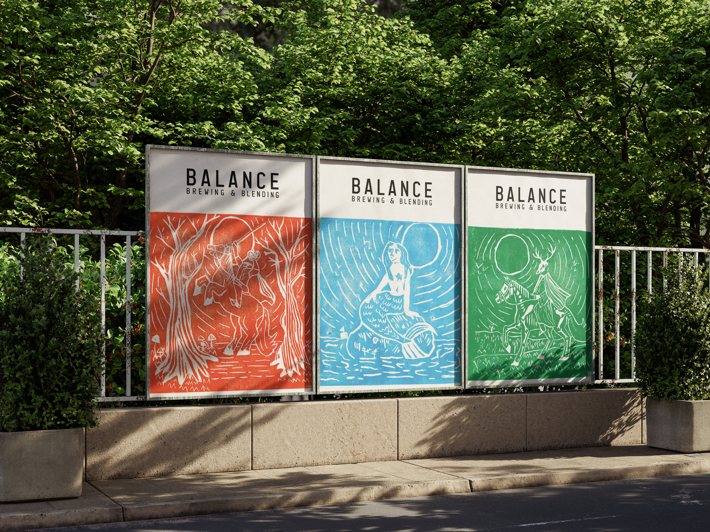
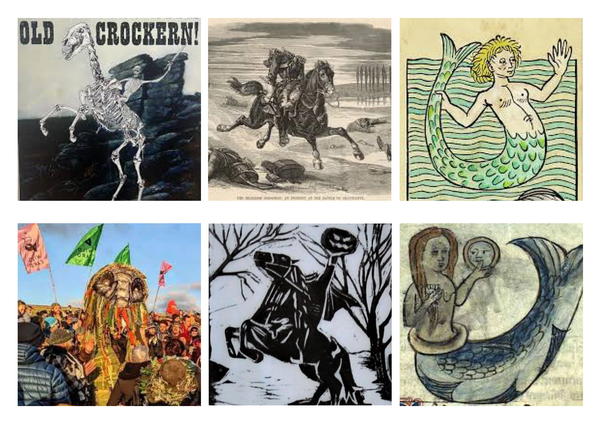
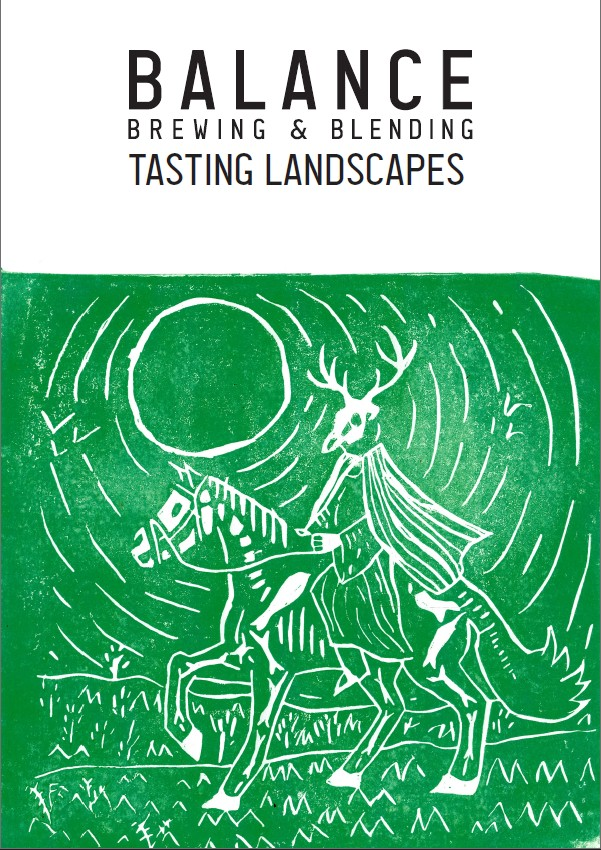

BALANCE BREWING & BLENDING
A self-initiated brief: build a craft brewery brand from the ground up — identity, packaging, photography, and campaign collateral.
Three label designs — Headless Horseman, Old Crockern, Mermaid — each rooted in British folklore and regional storytelling, hand-carved from single lino blocks. Supported by environmental photography across Greater Manchester, Instagram content, stories, and a 10-page A5 printed zine. Research to final deliverable, every stage done by hand. The project asked what a brewery brand could look like if craft wasn't a marketing word but a structural constraint — every decision limited to what the hands and a knife could produce.
What makes this project distinct is the refusal to separate process from product. The lino carving is the brand — not a decorative choice layered onto a digital workflow, but the structural foundation every other decision was built on.
YEAR
2024–2025
TOOLS
Hand-carved lino, Photoshop, InDesign, Camera
ROLE
Sole designer
CONTEXT
Self-initiated / University
PROCESS

01
RESEARCH
British folklore and regional mythology served as the primary visual source material. Three distinct legends — the Headless Horseman, Old Crockern (the spirit of Dartmoor), and the Mermaid — were chosen for their regional specificity and visual potential. Reference imagery was gathered from historical engravings, folklore archives, and landscape photography to ground each label in an authentic visual tradition.

02
CARVING
Each label was hand-carved from a single lino block — no tracing, no shortcuts. The carving process required translating complex figurative forms into a purely subtractive medium, working in reverse. Every mark made was intentional; errors were permanent. This constraint became the defining quality of the final work, giving each label a visual character that digital reproduction couldn't replicate.

03
PHOTOGRAPHY
Environmental photography was shot across Greater Manchester to situate the brand in its actual geographic context. Locations were selected for their connection to the folklore subjects and to create a sense of authenticity around the craft positioning of the brand. The photography had to work as editorial content in its own right — not just as product photography.

04
CAMPAIGN
Full campaign deliverables included Instagram content, animated stories, physical label mockups, and a 10-page A5 printed zine documenting the process from folklore research to final prints. Every element was designed to reinforce the hand-crafted, narrative-driven identity of the brand — the zine in particular framing the lino process as a subject worth documenting rather than concealing.
OUTCOME


This project proved that structural constraints — in this case, what a lino block and a knife could produce — aren't limitations but generators. The tactile process forced decisions that a purely digital workflow would have made optional, and the work is stronger for it.